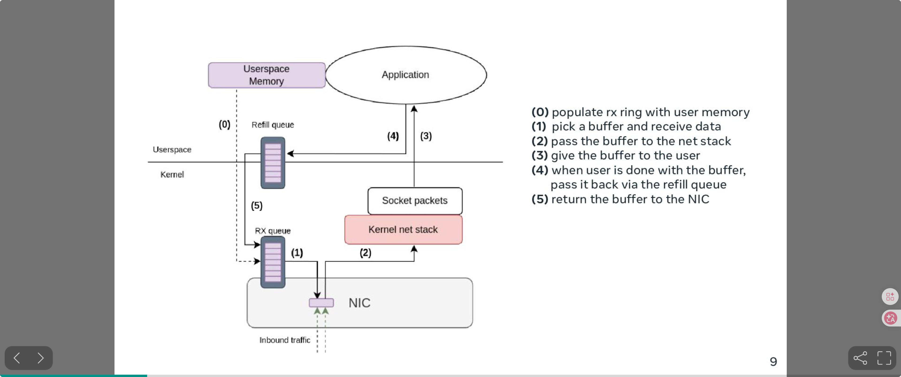
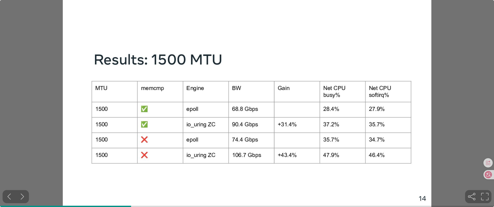

API Gateway Performance Doubling in Practice (2025–2026)
This post summarizes a series of performance optimizations we made to our in-house API gateway over the past year. The work spans the networking layer, protocol layer, threading model, and memory management, and ultimately doubled throughput on the same hardware.
We also upgraded the runtime from JDK 17 to JDK 25, enabling generational ZGC, Compact Object Headers, and improved JIT optimizations.
Table of Contents
- 1. Architecture Overview
- 2. Protocol Sniffing: Remove TLS/ALPN Dependency, Auto-detect H1/H2
- 3. Async Connection Pool: Lock-free Waiting with CompletableFuture
- 4. Virtual-thread Filters: Free the IO Threads
- 5. io_uring Enablement & Tuning + Linux 6.1 Upgrade
- 6. Disable H2 Huffman Encoding: Trade Bandwidth for CPU
- 7. H2 Header Reuse: Eliminate H2→H1→H2 Conversion Overhead
- 8. Remove Header Object Pooling: Generational ZGC Cross-gen Reference Trap
- 9. APM Agent Allocation Optimizations
- 10. Upstream Contribution: Optimizations Merged into Netty
- 11. Ongoing Exploration
- 12. Summary & Wins
1. Architecture Overview
Our gateway is an in-house reverse proxy built on Netty. In production, traffic first hits a cloud load balancer (LB) and is then forwarded to the gateway. Between the gateway and upstream services we use HTTP/2 everywhere. The topology looks like this:
Client ──(H1/H2)──▶ Cloud LB ──(H1/H2 passthrough)──▶ Gateway (Netty Pipeline) ──(H2)──▶ Upstream Service
│
Filter Chain
(authn/authz/ratelimit/...)
A key constraint: the cloud LB is protocol-transparent. If the client speaks H1, the LB forwards H1; if the client speaks H2, the LB forwards H2. The gateway must handle both H1 and H2 on the same port.
Before optimization, the primary bottlenecks were:
- Protocol negotiation via TLS/ALPN, costing ~10% CPU
- Blocking waits in the connection pool, stalling IO threads
- Filters executed on a fixed business thread pool, saturating under high concurrency
- epoll syscall overhead, where syscall frequency becomes a bottleneck
- H2 codec CPU cost, especially Huffman coding and header conversions
- Allocations and GC pressure, from frequent object creation/boxing
2. Protocol Sniffing: Remove TLS/ALPN Dependency, Auto-detect H1/H2
Background
Because the LB is protocol-transparent, the gateway must distinguish H1 vs H2 on the same port. A straightforward approach is TLS + ALPN, but in an internal network this is mostly wasted work. Flame graphs showed ALPN-related logic consuming ~10% CPU.
Solution
Inspired by Vert.x’s Http1xOrH2CHandler, we implemented a byte-sniffing handler.
HTTP/2 requires clients to send a 24-byte connection preface right after connection establishment:
PRI * HTTP/2.0\r\n\r\nSM\r\n\r\n
HTTP/1.x starts with a method token (GET, POST, ...). These don’t conflict. We read the first bytes, decide the protocol, configure the pipeline accordingly, then remove the sniffing handler so there is zero overhead afterwards:
public class HttpProtocolSniffChannelHandler extends ChannelInboundHandlerAdapter {
private static final ByteBuf H2_PREFACE = Http2CodecUtil.connectionPrefaceBuf();
@Override
public void channelRead(ChannelHandlerContext ctx, Object msg) {
ByteBuf buf = (ByteBuf) msg;
if (isHttp2Preface(buf)) {
configurePipeline(ctx, Protocol.H2);
} else {
configurePipeline(ctx, Protocol.H1);
}
ctx.pipeline().remove(this); // remove after detection; zero overhead afterwards
ctx.fireChannelRead(buf);
}
}
This removes the TLS/ALPN dependency entirely and supports plaintext H1/H2 on a single port, saving ~10% CPU.
3. Async Connection Pool: Lock-free Waiting with CompletableFuture
Background
We maintain connection pools between the gateway and upstream services. The previous implementation used blocking waits (SynchronousQueue). When the pool ran out, IO threads could block, directly reducing event-loop throughput.
Solution
We referenced HikariCP’s ConcurrentBag design and implemented a fully async, non-blocking connection pool. The key change: replace the blocking SynchronousQueue with a CompletableFuture-based async exchanger.
Blocking wait in original HikariCP (SynchronousQueue):
// HikariCP original: blocks here when the pool is empty
T borrow(long timeout, TimeUnit unit) {
// ... ThreadLocal and sharedList miss ...
// Blocks: the thread sleeps until a connection is returned
T entry = handoffQueue.poll(timeout, unit); // SynchronousQueue.poll()
return entry;
}
Our async version (AsyncQueue):
/**
* A CompletableFuture-based async exchanger that replaces SynchronousQueue.
* Core idea: register a Future instead of parking a thread.
*/
class AsyncQueue<T> {
private final ConcurrentLinkedQueue<CompletableFuture<T>> waiters = new ConcurrentLinkedQueue<>();
/**
* Called when returning a connection: deliver directly to the first waiter.
*/
boolean offer(T item) {
CompletableFuture<T> waiter;
while ((waiter = waiters.poll()) != null) {
if (waiter.complete(item)) return true;
// complete() failed => waiter already timed out/cancelled; try the next
}
return false;
}
/**
* Called when borrowing: register a Future and return immediately (non-blocking).
*/
CompletableFuture<T> poll(long timeout, TimeUnit unit) {
CompletableFuture<T> future = new CompletableFuture<>();
waiters.offer(future);
// Use HashedWheelTimer for timeouts (avoid ScheduledThreadPoolExecutor contention)
timer.newTimeout(t -> future.completeExceptionally(TIMEOUT_EXCEPTION), timeout, unit);
return future;
}
}
Why not CompletableFuture.orTimeout()?
orTimeout() relies on ScheduledThreadPoolExecutor and its delayed queue/locking. Under high concurrency it introduces unnecessary contention. Netty’s HashedWheelTimer is single-thread-driven; timeout registration is O(1) and works well for large volumes of short-lived timers.
Overall flow:
borrowAsync() flow:
① ThreadLocal list (fastest path)
│ hit → CompletableFuture.completedFuture(entry)
│ miss ↓
② Shared CopyOnWriteArrayList (fast path)
│ hit → CompletableFuture.completedFuture(entry)
│ miss ↓
③ AsyncQueue.poll() (register Future; return immediately)
│ connection returned → future.complete(entry)
│ timeout → future.completeExceptionally(timeout)
Benefits
- IO threads never block waiting for upstream connections
CompletableFuturealigns well with Netty’s event-driven modelHashedWheelTimerreduces timeout-related contention
4. Virtual-thread Filters: Free the IO Threads
Background
The filter chain includes authn/authz/ratelimiting and more. Some filters involve blocking I/O such as Redis and database calls. Previously we dispatched filters to a fixed platform-thread pool (DefaultEventExecutorGroup), which can saturate under high concurrency.
Solution: Virtual Threads
We use JDK 21 virtual threads (Project Loom) for the filter chain, replacing DefaultEventExecutorGroup:
Before:
IO Thread ──dispatch──▶ DefaultEventExecutorGroup (fixed N platform threads)
├── Filter1(sync)
├── Filter2(blocking Redis) ← queueing when threads are exhausted
└── Filter3(sync)
After:
IO Thread ──dispatch──▶ VirtualThread Executor (one virtual thread per request)
├── Filter1(sync)
├── Filter2(blocking Redis) ← virtual thread yields; doesn’t burn platform threads
└── Filter3(sync)
Related: ThreadLocal performance on virtual threads
After introducing virtual threads we ran into a non-obvious issue: ThreadLocal performs poorly on virtual threads.
Virtual threads are typically short-lived (often one request). That means the “cache” semantics of ThreadLocal rarely pay off: instead of reuse, you repeatedly initialize → use → discard. You also pay extra overhead from ThreadLocalMap initialization and Entry allocations.
This is not unique to us. The Jackson community reported similar regressions: jackson-core#919. In that case, an internal ThreadLocal<SoftReference<BufferRecycler>> caused serious performance degradation with virtual threads: each virtual thread tended to build its own BufferRecycler, and SoftReference further increased GC pressure.
Our approach was to replace per-thread pooling (e.g. Netty Recycler on virtual threads) with a global bounded MPMC queue, so virtual threads can still reuse objects efficiently.
Benefits
- IO threads are fully dedicated to networking
- No fixed thread-pool saturation
- Blocking calls in filters yield naturally
⚠️ JDK note: In JDK 21, entering
synchronized(Object Monitor) on virtual threads can pin the carrier thread, reducing scalability around blocking points. If monitors are common, you may observe more compensation threads and higher scheduling overhead.Prefer newer JDKs (and keep up with Loom fixes) and minimize long monitor holds on virtual threads.
Also note there are deadlock risks involving classloading (see case 1, case 2). JDK-8347265 mitigates the issue; keep an eye on updates.
Practical advice: Only run controlled, predictable code on virtual threads, and try to avoid triggering classloading during request execution (preload classes at startup).
5. io_uring Enablement & Tuning + Linux 6.1 Upgrade
Background
The traditional epoll model has a few issues under high concurrency:
- Each IO op needs separate syscalls (
epoll_wait+read/write) - Frequent user/kernel context switches
- Copies:
writecopies from user-space to kernel-space buffers
Solution: io_uring + Linux 6.1
We upgraded Netty to 4.2 and adopted io_uring, and upgraded the Linux kernel to 6.1 to get full feature support.
5.1 Multishot: submit once, reap continuously
Multishot is one of io_uring’s most impactful features. Traditionally, each recv/accept requires submitting an SQE, then re-submitting for the next operation.
Multishot breaks that 1:1 loop:
Traditional (one-shot):
user → submit recv SQE → kernel completes → CQE → user submits next recv → ...
Multishot:
user → submit recv_multishot SQE → kernel completes → CQE₁
completes → CQE₂ ← no re-submit needed
completes → CQE₃
...
In our gateway we enable all three multishot capabilities:
| Feature | Min kernel | Purpose |
|---|---|---|
poll_multishot |
Linux 5.13+ | register once and continuously receive readiness events |
accept_multishot |
Linux 5.19+ | accept multiple connections from one submission |
recv_multishot |
Linux 6.0+ | receive multiple packets from one submission |
Because one SQE can yield multiple CQEs, we need to increase CQ size:
IoUringIoHandlerConfig config = new IoUringIoHandlerConfig();
config.setRingSize(4096); // SQE ring
// multishot produces more CQEs; increase CQ size to avoid overflow
if (IoUring.isAcceptMultishotEnabled() || IoUring.isRecvMultishotEnabled()
|| IoUring.isPollAddMultishotEnabled()) {
config.setCqSize(config.getRingSize() * 4); // CQE = SQE × 4
}
5.2 Buffer Ring: memory efficiency for recv_multishot
Traditional recv requires userspace to provide a buffer per operation. At massive connection counts, per-connection receive buffers waste huge memory (most connections are idle most of the time).
Buffer Ring is an io_uring kernel-side buffer pooling mechanism that solves this.
Important: Buffer Ring does not make recv zero-copy. The kernel still copies data from the protocol stack into a selected registered buffer. Buffer Ring mainly removes per-connection buffer reservation and improves reuse.
Traditional (per-connection buffer):
Conn1 → buffer1 (4KB, mostly idle)
Conn2 → buffer2 (4KB, mostly idle)
...
Total memory = N × 4KB
Buffer Ring:
Kernel shared buffer pool ←── all connections borrow on demand
Total memory = pool_size × buffer_size
This is also a prerequisite for recv_multishot: the kernel can keep receiving without userspace supplying a fresh buffer every time.
if (IoUring.isRegisterBufferRingSupported()) {
IoUringBufferRingConfig bufferRingConfig = IoUringBufferRingConfig.builder()
.allocator(new IoUringAdaptiveBufferRingAllocator(
ByteBufAllocator.DEFAULT,
1024, // min
1024, // initial
4096, // max
true))
.bufferRingSize((short) 4096)
.batchAllocation(true)
.batchSize(2048)
.build();
config.setBufferRingConfig(bufferRingConfig);
}
batchAllocation and TLB behavior: allocating buffers one-by-one during traffic spikes may map fresh physical pages repeatedly and cause TLB churn. Batch allocating (e.g. 2048 buffers) improves locality and reduces TLB misses.
5.3 Zero-Copy Send
For writes above a threshold (default 32KB), we use IORING_OP_SEND_ZC (Linux 6.0+, stable in 6.1) to enable kernel zero-copy send:
Normal write: user buffer → copy to kernel buffer → NIC
Zero-copy: user buffer ───── DMA directly ───→ NIC
For scatter-gather, use IORING_OP_SENDMSG_ZC (Linux 6.1).
Zero-copy complicates buffer lifecycle: you must wait for IORING_CQE_F_NOTIF before freeing:
Normal write: submit SQE → CQE → free buffer ✓
Zero-copy write: submit SQE → CQE (F_MORE) → wait NOTIF CQE → free buffer ✓
5.4 Setup flags: io_uring initialization tuning
Netty 4.2’s Native.setupFlags() enables an optimal flags combination based on kernel capabilities:
static int setupFlags(boolean useSingleIssuer) {
int flags = IORING_SETUP_R_DISABLED | IORING_SETUP_CLAMP;
if (isSetupSubmitAllSupported()) {
flags |= IORING_SETUP_SUBMIT_ALL;
}
if (useSingleIssuer && isSetupSingleIssuerSupported()) {
flags |= IORING_SETUP_SINGLE_ISSUER;
}
if (isSetupDeferTaskrunSupported()) {
flags |= IORING_SETUP_DEFER_TASKRUN;
flags |= IORING_SETUP_TASKRUN_FLAG;
}
if (isIoringSetupNoSqarraySupported()) {
flags |= IORING_SETUP_NO_SQARRAY;
}
// ...
return flags;
}
The most important one is IORING_SETUP_DEFER_TASKRUN.
More precisely, with this flag enabled, io_uring does not actually create task_work in __io_req_task_work_add(). Instead, it turns the work into local work.
This matters especially in scenarios where the system frequently interleaves “producing task work” with “issuing syscalls” (for example, repeatedly calling io_uring_enter). When work is kept as local work rather than being immediately materialized as task_work and executed at less predictable times, it creates better opportunities for batching on both the userspace and kernel side, which unlocks further optimization potential.
5.5 Linux 6.1 key features used
| Feature | Intro | Notes |
|---|---|---|
IORING_OP_SEND_ZC |
6.0 | zero-copy send |
IORING_OP_SENDMSG_ZC |
6.1 | vectorized zero-copy |
recv_multishot |
6.0 | continuous receive |
accept_multishot |
5.19 | continuous accept |
| Buffer Ring kernel improvements | 6.1 | less contention |
IORING_SETUP_DEFER_TASKRUN |
6.1 | defer task work to poll |
IORING_SETUP_SINGLE_ISSUER |
6.0 | single-submitter optimization |
5.6 Thread model: from 2N to N
With epoll we ran CPU_CORE * 2 IO threads (Netty default). After switching to io_uring, flame graphs showed more time in __schedule: 2N threads competing on N cores causes heavy context switching.
Also, io_uring’s architecture naturally needs fewer userspace threads:
- Syscall coalescing: io_uring batches submission and completion via SQ/CQ rings; single-thread IO throughput is typically much higher than epoll (where each read/write is a separate syscall).
- Kernel-side async work: io_uring has
io-wq(io worker) kernel thread pools to handle some operations that can’t complete immediately. This reduces the need for extra userspace threads.
We reduced IO threads to CPU_CORE:
// epoll: 2x cores
int epollThreads = Runtime.getRuntime().availableProcessors() * 2;
// io_uring: 1x cores
int ioUringThreads = Runtime.getRuntime().availableProcessors();
Measured result: fewer threads increased effective CPU utilization and improved throughput.
Benefits
- syscalls reduced significantly (multishot + batched io_uring)
- Half the IO threads; less scheduling overhead
- Zero-copy for large writes reduces copies
- Buffer Ring reduces wasted per-connection memory and TLB misses
6. Disable H2 Huffman Encoding: Trade Bandwidth for CPU
Background
HTTP/2 HPACK uses Huffman coding for header names/values by default. Flame graphs showed HpackEncoder Huffman encoding consumed a significant share of CPU.
Analysis
In a gateway proxy on a high-bandwidth internal network, we are CPU-bound. Huffman saves little:
- Most headers are short (
:method: GETis 3 bytes) - Many values are high-entropy (UUID/token) so compression is weak or can even expand
- Encoding/decoding requires table lookups and bit operations
Conclusion: in our environment, Huffman trades meaningful CPU for negligible bandwidth.
Solution: Disable Huffman encoding
We override Netty’s HpackEncoder (placed under the same package io.netty.handler.codec.http2 to access package-private members) and skip Huffman encoding entirely:
// Override Netty's HpackEncoder under io.netty.handler.codec.http2
public class HpackEncoder {
private void encodeStringLiteral(ByteBuf out, CharSequence string) {
// Write raw bytes and skip Huffman encoding
encodeInteger(out, 0, 7, string.length());
if (string instanceof AsciiString) {
AsciiString asciiString = (AsciiString)string;
out.writeBytes(asciiString.array(), asciiString.arrayOffset(), asciiString.length());
} else {
out.writeCharSequence(string, CharsetUtil.ISO_8859_1);
}
}
}
Benefits
- Lower H2 encoding CPU time
- Minimal bandwidth increase (not a bottleneck in our environment)
7. H2 Header Reuse: Eliminate H2→H1→H2 Conversion Overhead
Background
For H2 traffic, we still need to support a legacy filter chain built around HTTP/1.1 semantics (HttpServletRequest/HttpHeaders). Netty’s standard approach converts inbound H2 frames to H1 objects using InboundHttp2ToHttpAdapter, runs filters, then converts back to H2 with HttpToHttp2ConnectionHandler.
Client (H2) → [InboundHttp2ToHttpAdapter: H2 Headers → H1 Headers]
→ Filter Chain (operates on H1 Headers)
→ [HttpToHttp2ConnectionHandler: H1 Headers → H2 Headers]
→ Upstream (H2)
This involves heavy string work:
- pseudo-headers (
:method,:path,:authority) conversions - header name case normalization (H2 requires lowercase, while H1 codebases traditionally use canonical/camel-cased names)
- new
HttpHeadersallocations on each conversion
In a pass-through gateway, most headers are not modified, so this conversion is waste.
Solution: Dual-write pass-through headers
Core idea: keep the original H2 Headers and expose an H1 view for filters; on egress, reuse the original H2 Headers and skip H1→H2 conversion.
Http2Http1MergedHeaders — a dual-write wrapper:
public class Http2Http1MergedHeaders extends DefaultHttpHeaders {
private final HttpHeaders h1Header; // H1 view for filters
private Http2Headers h2Header; // original H2 headers for direct egress
// Dual-write on mutations
@Override
public HttpHeaders add(String name, Object value) {
h1Header.add(name, value);
if (h2Header != null) {
h2Header.add(AsciiString.of(name.toLowerCase()), value.toString());
}
return this;
}
@Override
public HttpHeaders remove(String name) {
h1Header.remove(name);
if (h2Header != null) {
h2Header.remove(AsciiString.of(name.toLowerCase()));
}
return this;
}
// Egress: reuse the synced H2 headers directly
public Http2Headers getHttp2Headers() { return h2Header; }
// Help GC once sent
public void clearHttp2Headers() { h2Header = null; }
}
Ingress change (InboundHttp2ToHttpAdapter):
When converting H2 frames into an H1 request object, we use MergedHeaders instead of a regular HttpHeaders, and keep a reference to the original H2 headers.
DefaultFullHttpRequest request = new DefaultFullHttpRequest(
HttpVersion.HTTP_1_1, method, path, data,
Http2Http1MergedHeaders.newHeaders(),
IgnoreTrailingHeaders.INSTANCE
);
((Http2Http1MergedHeaders) request.headers()).saveHttp2Headers(http2Headers);
Egress change (HttpToHttp2ConnectionHandler):
When converting the H1 request object back into H2 frames, if the headers are MergedHeaders we directly return the retained H2 headers. Otherwise (e.g. a pure H1 path), we fall back to the standard conversion.
Http2Headers toHttp2Headers(HttpHeaders inHeaders) {
if (inHeaders instanceof Http2Http1MergedHeaders merged) {
Http2Headers h2 = merged.getHttp2Headers();
if (h2 != null) {
merged.clearHttp2Headers();
return h2; // reuse; skip full H1→H2 conversion
}
}
return HttpConversionUtil.toHttp2Headers(inHeaders);
}
Data flow comparison
Before (H2→H1→H2):
H2 → decode → create H1 headers (allocs) → filter
→ create H2 headers (allocs) → encode → H2
After (H2 pass-through):
H2 → decode → keep H2 headers + create H1 view → filter (dual-write)
→ reuse H2 headers → encode → H2
Savings: N H1→H2 string conversions (N = number of headers, typically 15–30) plus one `HttpHeaders` allocation on the egress path.
Benefits
- Eliminates the expensive egress H1→H2 conversion
- Reduces per-request string allocations (typically 15–30 headers)
- Saves an allocation via singleton trailing headers
8. Remove Header Object Pooling: Generational ZGC Cross-gen Reference Trap
Background
We previously pooled HttpHeaders, DefaultFullHttpRequest, etc. (Recycler) to reduce allocations. It helped with non-generational ZGC.
What went wrong
After moving from non-generational ZGC to generational ZGC (starting with JDK 25, ZGC is generational-only by default), performance regressed. Root cause: cross-generation references:
HttpHeaderscontains aMap(header key/value storage) and manyCharSequencereferences- pooled
HttpHeaderssurvive long enough to be promoted to old gen - each request writes new young-gen strings (request-id/token/etc.) into these old-gen objects
- old→young references explode; remembered sets and barriers become expensive
Pooled HttpHeaders (old gen)
├── Map<String, List<String>>
│ ├── "x-request-id" → ["abc123"] ← young object
│ ├── "authorization" → ["Bearer xxx..."] ← young object
│ ├── "content-type" → ["application/json"] ← young object
│ └── ...
└── reset() between requests, but the headers object stays old-gen
Generational ZGC maintains remembered sets to track references from old gen to young gen, so it knows which young objects are still reachable during young collections. With a large number of pooled HttpHeaders, each request can create dozens of old→young reference updates, which means lots of write barriers and remembered-set maintenance. In our case, the maintenance cost outweighed the allocation savings from pooling.
Fix
Remove pooling for DefaultFullHttpRequest, DefaultHttpHeaders, DefaultHeaders, and allocate normally per request.
Benefits
- Restored performance under generational ZGC
- Avoided remembered-set bloat and barrier overhead
- Simpler code (no pooling lifecycle complexity)
Lesson learned
Object pools are not always beneficial. They only help when “allocation cost > pooling management cost”. Under generational GC, pooling long-lived objects whose fields frequently point to short-lived objects can introduce severe cross-generation reference overhead. This is especially true for objects that contain many reference fields such as Map and List.
9. APM Agent Allocation Optimizations
Background
We run an APM agent for tracing/monitoring. Using JFR’s ObjectAllocationSample, we found the APM interceptors were a major allocation hotspot.
Why ObjectAllocationSample?
JFR provides two “per-allocation” events:
ObjectAllocationInNewTLAB: triggered when an allocation happens because a thread has to refill its TLAB.ObjectAllocationOutsideTLAB: triggered when an allocation happens outside TLAB (e.g., large objects or slow-path allocations).
These events are extremely detailed, but in practice they only become actionable once you also capture stack traces — and capturing a stack trace for every allocation is expensive. In typical microservice stacks, call depths can easily reach hundreds of frames; high-frequency stack-walks can distort the performance profile you’re trying to measure.
ObjectAllocationSample (introduced in JDK 16 and enabled by default) is designed to address this:
- It focuses on the same signals (TLAB refills / outside-TLAB allocations) but applies a throttle (default ~150 samples/s) to keep overhead bounded.
- The throttling is not “take the first N events”. Internally it uses an EWMA (Exponentially Weighted Moving Average) model to estimate and continuously adjust the sampling interval.
- It is weighted by allocated bytes: larger allocations are more likely to be sampled.
- Its
weightfield does not mean “size of this one object”. Instead it records the total number of bytes allocated by that thread since the previous sample.
As a result, after aggregating samples into a flame graph, the hottest stacks correspond to the largest allocation volume, which makes it much more practical for continuous allocation profiling in production-like workloads.
Findings
1) Repeated StringBuilder creation when iterating headers
The interceptor concatenated headers into a string, creating a new StringBuilder per request.
Fix: use ThreadLocal<StringBuilder> and setLength(0) before reuse; also reduce truncation length for header values.
2) Repeated protobuf Builder creation
APM reporting uses gRPC/protobuf; the implementation created builders each time.
Fix: cache builder objects in ThreadLocal and call clear() after use.
Benefits
- Allocation share from the APM agent dropped significantly
- Lower GC pressure and fewer young GCs
- Low-risk changes (cache + reuse)
10. Upstream Contribution: Optimizations Merged into Netty
During the work we found bugs and optimization opportunities in Netty’s io_uring transport. We contributed fixes upstream. Some merged PRs:
| PR | Topic | Notes |
|---|---|---|
| #14690 | Provided Buffers support | Buffer Ring; prerequisite for recv_multishot |
| #14793 | IORING_SETUP_CQSIZE support |
configure CQ size for multishot |
| #15210 | io_uring Unix Domain Socket | faster local IPC |
| #15491 | IORING_OP_SEND_ZC support |
zero-copy send |
| #15591 | reduce redundant syscalls | fewer unnecessary io_uring_enter |
| #16130 | refactor IORING_OP_SENDMSG_ZC |
improved reliability |
| #16234 | MsgHdrMemory allocation | fewer allocations via slicing |
| #16259 | reduce non-blocking syscalls | further reduce io_uring_enter |
| #14650 | IORING_REGISTER_IOWQ_MAX_WORKERS |
cap io-wq workers |
| #15054 | buffer group ordering fix | ensure configured before reads |
| #15482 | cache io_uring probe results | faster initialization |
We believe performance work shouldn’t stop at application code; upstreaming changes benefits the whole Netty community.
11. Ongoing Exploration
11.1 EventLoop-driven Virtual Threads
Current situation
Today our virtual threads are scheduled by the JDK default ForkJoinPool, which effectively creates two thread systems:
┌─────────────────────────────┐ ┌──────────────────────────────┐
│ Netty EventLoop Threads │ │ ForkJoinPool Carrier Threads │
│ (io_uring, N) │ │ (default scheduler, M) │
│ │ │ │
│ • network IO │ │ • filter chain │
│ • H2 codec │ │ • blocking Redis/DB calls │
│ • protocol sniffing │ │ • mount/unmount │
└─────────────────────────────┘ └──────────────────────────────┘
↕ cross-pool scheduling ↕
Issues:
- cross-pool scheduling overhead (two context switches)
- cache locality loss across cores
- more total threads and context switches
Direction: make EventLoop the virtual-thread scheduler
If Netty EventLoop threads can act as carrier threads, we can unify scheduling:
┌────────────────────────────────────────────────┐
│ Netty EventLoop Threads (io_uring, N) │
│ │
│ • network IO │
│ • H2 codec │
│ • protocol sniffing │
│ • also drive virtual threads as carriers │
└────────────────────────────────────────────────┘
Potential benefits:
- zero cross-thread-pool scheduling: virtual-thread filters and network IO run on the same EventLoop
- natural cache affinity: a request’s full processing stays on the same CPU core
- fewer total threads: only N EventLoop threads, no extra ForkJoinPool
- reduced pinning risk: fewer chances to hit blocking/monitor/classloading in uncontrolled code paths after cross-pool dispatch (pinning still requires careful attention)
We are following related work:
This direction is still in the prototype stage, but we believe a “unified scheduler” is the endgame for Netty + virtual threads.
11.2 io_uring Zero-Copy Receive: zero-copy on the receive path
We already use zero-copy send (SEND_ZC/SENDMSG_ZC), but the receive path still copies data from kernel to userspace. Netty also tracks this topic: netty#15475.
The key point in netty#15475 is that benchmarking shows the receive-side memory copy can consume a large amount of CPU.
Linux is pushing IORING_OP_RECV_ZC (Zero-Copy Receive). The idea is:
- Userspace pre-registers a memory region.
- The NIC DMA-writes packets directly into that region.
- Userspace receives
{offset, length}from the io_uring CQE.
This makes the receive path zero-copy end-to-end.
Kernel Recipes 2024 talk: "Efficient zero-copy networking using io_uring".
ZC Rx data flow:

Source: Kernel Recipes 2024 - "Efficient zero-copy networking using io_uring", Pavel Begunkov & David WeiBenchmark (1500 MTU):

Source: Kernel Recipes 2024 - "Efficient zero-copy networking using io_uring", Pavel Begunkov & David WeiAt 1500 MTU, io_uring ZC Rx improves bandwidth by 31%–43% vs epoll under the standard TCP stack.
This requires newer kernels (6.12+) and NIC driver support. Once Netty integrates IORING_OP_RECV_ZC, we can further reduce CPU cost on the receive path.
12. Summary & Wins
Key items
| Item | Mechanism | Impact |
|---|---|---|
| Protocol sniffing | H2 preface match; remove TLS/ALPN | CPU↓ ~10% |
| Async connection pool | CompletableFuture instead of SynchronousQueue | throughput↑ latency↓ |
| Virtual-thread filters | Loom instead of fixed executor | throughput↑ fewer blocked threads |
| io_uring + Linux 6.1 | multishot + zero-copy + buffer ring + DEFER_TASKRUN | throughput↑ CPU↓ |
| Disable Huffman | skip HPACK Huffman | CPU↓ |
| H2 header reuse | dual-write to avoid H2↔H1 conversions | CPU↓ alloc↓ |
| Remove header pooling | avoid generational ZGC cross-gen refs | GC↓ |
| APM optimizations | cache StringBuilder / protobuf builders | alloc↓ GC↓ |
| Disable safety checks | remove some ByteBuf defensive checks | CPU↓ |
| MPSC queue | JCTools lock-free queue vs BlockingQueue | throughput↑ |
Notes on two items above:
- Disable safety checks: in controlled production environments, optionally bypass some defensive ByteBuf checks (e.g. certain
checkAccessible/bounds-check paths) to reduce hot-path overhead. This should be guarded by feature flags, rollout, and rollback to avoid masking real memory bugs. - MPSC queue: replacing blocking queues with lock-free MPSC queues (e.g. JCTools) reduces lock contention and context switching, especially for frequent cross-thread event dispatch.
Methodology
- flame-graph driven: use async-profiler to locate CPU hotspots and JFR
ObjectAllocationSampleto locate allocation hotspots; prioritize the stacks/functions with the largest share first - top-down, layer-by-layer optimization: from application to kernel
- remove unnecessary work:
- remove unnecessary protocol conversions (H2 header reuse)
- remove unnecessary encoding/decoding (disable Huffman)
- remove unnecessary safety checks (disable/avoid hot-path
checkAccessible) - remove unnecessary syscalls (io_uring multishot + batched submission)
- make everything async where possible: connection pool, filter execution
- leverage new OS/JDK features: io_uring, zero-copy, virtual threads
- design for GC: understand generational GC and avoid cross-generation reference traps; understand virtual threads’ impact on
ThreadLocalcaching - contribute upstream
There is no silver bullet in performance work, but systematic waste reduction at each layer helped us reach the goal of doubling throughput.